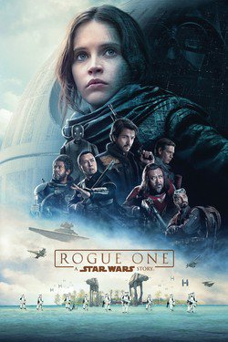
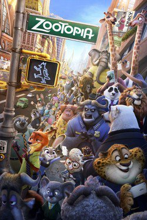
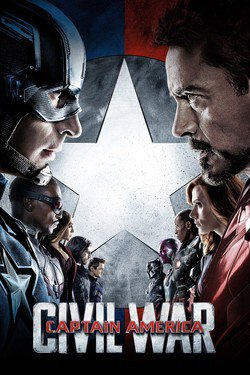

The Walt Disney Studios is an American film studio, one of the four major businesses of The Walt Disney Company and the main component of its Studio Entertainment segment. The studio, best known for its multifaceted film division, which is one of Hollywood's major film studios, is based at the Walt Disney Studios in Burbank, California. The Studios generated an estimated income of $2.703 billion during the 2016 fiscal year. The studio entertainment business alone brought in $5.83 billion in 2012. (Wikipedia, 2018)
| Film | Description | Movie Poster |
|---|---|---|
| Rogue One: A Star Wars Story | From Lucasfilm comes the first of the Star Wars standalone films, “Rogue One: A Star Wars Story,” an all-new epic adventure. In a time of conflict, a group of unlikely heroes band together on a mission to steal the plans to the Death Star, the Empire’s ultimate weapon of destruction. This key event in the Star Wars timeline brings together ordinary people who choose to do extraordinary things, and in doing so, become part of something greater than themselves. |  |
| Zootopia | Zootopia is a city like no other. With habitat neighborhoods like Sahara Square and Tundratown, it’s a melting pot where animals from every environment live together— a place where no matter what you are, from the biggest elephant to the smallest shrew, you can be anything. But when optimistic Officer Judy Hopps arrives, she discovers that being the first bunny on a police force of big, tough animals isn’t easy. Determined to prove herself, she jumps at the opportunity to crack a case, even if it means partnering with a fast-talking, scam-artist fox, Nick Wilde, to solve the mystery. |  |
| Captain America: Civil War | The movie finds Steve Rogers leading the newly formed team of Avengers in their continued efforts to safeguard humanity. But after another incident involving the Avengers results in collateral damage, political pressure mounts to install a system of accountability, headed by a governing body to oversee and direct the team. The new status quo fractures the Avengers, resulting in two camps— one led by Steve Rogers and his desire for the Avengers to remain free to defend humanity without government interference, and the other following Tony Stark’s surprising decision to support government oversight and accountability. |  |
(Movieweb.com, n.d.)